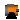
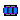

Icons for electrical machines
This package contains definitions for the graphical layout of machines. The icons can be utilized by inheriting them in the desired class using "extends" or by directly copying the "icon" layer.
Extends from Modelica.Icons.IconsPackage (Icon for packages containing icons).
| Name | Description |
|---|---|
| TransientMachine | |
| QuasiStationaryMachine | |
|  FundamentalWaveMachine | |
|  TransientTransformer | |
| QuasiStationaryTransformer |
This icon is designed for a transient machine model.
This icon is designed for a quasistationary machine model.
This icon is designed for a FundamentalWave machine model.
This icon is designed for a transient transformer model.
This icon is designed for a quasistationary transformer model.
Automatically generated Fri Oct 02 11:08:12 2015.